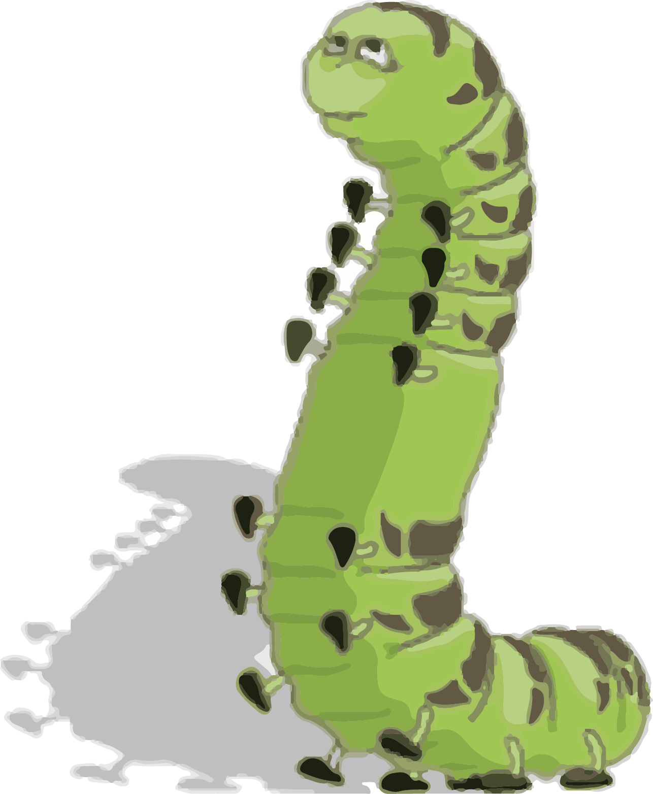

Yo! is an acronym for the Youth Opportunities Movement. This program is funded by the United States Department of Labor. The Local youth opportunity movement - Yo! Memphis - is a collaborative venture between the city of Memphis and grassroots citizens, business, clergy, educators, government officials and public and non-profit agencies that are dedicated to helping youth develop into productive and contributing members of the community. The vision of Yo! Memphis is that all youth, particularly, those who are out of school, acquire the necessary skills and work experience to successfully transition into adulthood, areers, further education and training.

Workforce development specialist will identify, recruit and enroll elligible youth and offer alternatives to dropping out of school, opportunities to receive acacdemic tutorial services, job readiness training and links to vocational training.
The mission of Yo! Memphis is to identify and provide the necessary resources to effectively serve economically disadvantaged youth living in the Enterprise Community. Any youth between the ages 14 through 21 who live in the enterprise community are eligible for Membership in Yo! Memphis. The goal of Yo! Memphis is to help youth to stay in school and graduate, earn a GED, learn job skills, attend college, trade school, and or technical school and earn long term employment!
IN TODAY'S WORLD reading is one of the most fundamental capacities that an individual can develop. For some, reading can open up bold new worlds and unlock many untold mysteries. For others reading can end the dilemma of paradox and ambiguity. For everyone, learning to read is essential. This workbook had been designed so that anyone, regardless of age, can learn how to read.
THE INSTRUCTIONAL part of this workbook is to be used as an aid to the person who will explain its contents to the student. The person that is READING the information in this workbook is to be the facilitator. The person LEARNING to “read” and use the materials in this workbook is the learner. The exercises are designed to help the learner learn how to learn.
UNDERSTANDING THE BASIC COMPOSITION of letters is a major key to unlocking the dynamic land of language. The words: character, letter and symbol are synonymous (equal) when speaking of words as language.
SOUND IS USED as a means to communicate recognition of our conscious experiences (ORAL COMMUNICATION). What is known as letters are representative symbols of SOUND. How letters sound when said alone and when they come together to form words is the focus of this workbook.
IN ORDER TO READ in an effective manner it is important to realize the sounds that are associated with each letter. All letters (symbols) have sounds that they represent. Some even have multiple sounds. This exercise will help the learner to learn the different sounds that are produced when each letter (character) is joined with another.

The first thing the learner must do is learn the sound or sounds of each letter. By doing this, the learner will be learning the alphabet. Before the learner can read effectively, s/he must know the alphabet.
AT THIS POINT the facilitator should have the student use a model “phonetic chart”. The charts are found in the back of this workbook. Please ask the student to trace the model “A” chart by hand, making it as neat as possible. The facilitator should practice saying each letter with the student. Each day, for five days (Monday-Friday), have the student make the chart. Ask the learner to write and pronounce each letter as s/he makes the chart.
Each day after the completion of the chart, have the student try to say the alphabet. The facilitator should provide assistance to the student with any letter s/he may have trouble pro- nouncing. The facilitator should attempt to ascertain the student’s area of difficulty.
PRACTICE THIS PROCEDURE everyday for five days. At the end of this time, if the student does not know the alphabet, the facilitator and student should start again and repeat the process for five more days.
THE FACILITATOR SHOULD BRING to the student's attention how the mouth is shaped as each letter is spoken. It is important for student and facilitator to discuss what the student is feeling when he/she sounds each letter. The facilitator can ask the learner such things as, where are the lips, where is the tongue, how do teeth and tongue interact, and is s/he breathing in or out? This is important so that the student learns how the voice, breath, and the whole mouth, nose, jaw, throat, nasal passages and face work together or with each other to form sounds.
THE LETTERS A-E-I-O-U-(Y) at the top of the practice charts are known as vowels. As the student practices the alphabet s/he will also learn the sounds of the vowels. The vowel sounds are slightly different in English than they are in other languages. The fa- cilitator should now direct the student’s attention to the sounds that are made when each letter that is a consonant is attached to a letter that is a vowel. When vowels are attached to consonants some vowels will have more than one sound.
IN THE LANGUAGE that is known as English each letter is “not” distinctive, which is con- trary to most other languages. It is important to note the different pronunciation that IS “distinctive” to American English. In English there are many words that are not pronounced the way that they are spelled, whereas, in most other languages, words are pro- nounced exactly the way that they are spelled.
AFTER THE ALPHABET has been learned, the student should start the process of connecting the letters on each side of the chart to the vowel located in the center of the page.
IN ORDER TO ACCOMPLISH this task, the student will need a ruler. The ruler will allow the learner to draw a straight line from the letters to the vowel in an attempt to make in- tersecting lines. An example of how the lines should look is shown in the back of this workbook. With practice and patience the student will learn to make uniform lines.